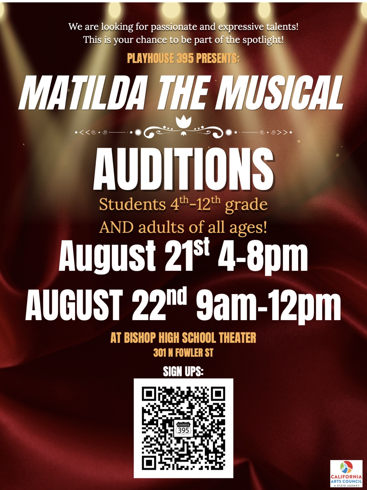
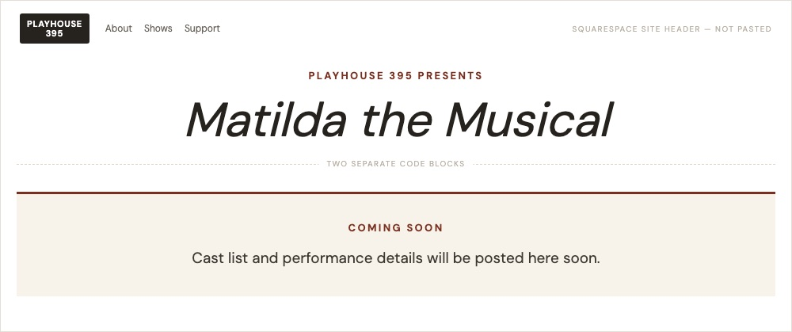
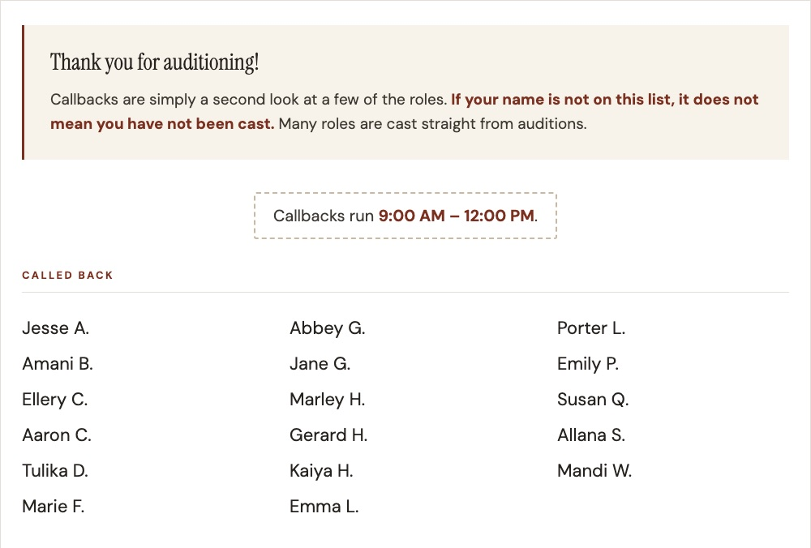
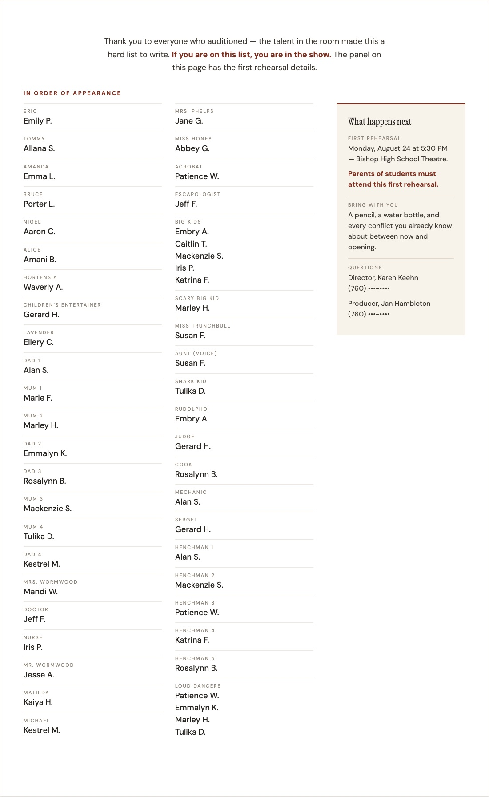
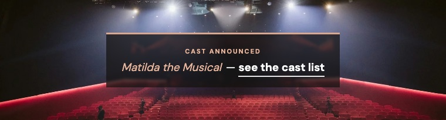
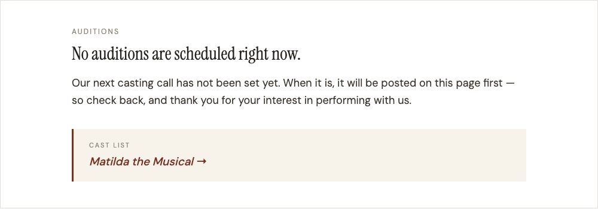

Everything we have built for Matilda, put in the order a show needs it, so the next show can do it again — with an AI assistant, or entirely by hand.
Jan — you said we need other people who can do this, not just me. I agree, and this page is the start of how. Matilda is the first show where we have done the whole run of it online: auditions, callbacks, the cast list, the rehearsal call board, and now the flyer and the website for ticket sales.
None of it was a one-off. Every show goes through the same stages and needs the same pieces, just with different dates, names and artwork. So the plan is to write each stage down as a short playbook with Matilda as the worked example, so the next person does not have to invent anything, only fill it in.
Fill in the show’s facts once — the dates, the place, the prices, the artwork — and every flyer, web page and schedule comes from them.
Each stage below is a set of pieces that every show needs. Under each one is what we actually built for Matilda — the real website blocks, exactly as they went up. We still have every one, ready to paste again with the next show’s words. (Names are shortened on this page.)
Tell people the show is happening and how to try out.


Post who is called back, and when, the same evening.

Announce the cast and tell them what happens next.
These blocks are written to be reused: next season the same blocks go on a different show’s page with the words changed, not rebuilt.



Turn the production team’s weekly schedule into something each cast member can read in seconds.
One look, one set of facts, everywhere: the flyer, the homepage and the show’s page all say the same thing and lead to the same place. It is all live; it is laid out on the Matilda Publicity page.
Not built yet. Things this stage could include, for us to decide together:
Close the show out, and leave the website ready for the next one.
The pieces a show needs. For Matilda most are now gathered in one place, and they are the template for the next show.
Whoever picks this up next has a choice, and all three use the same playbook.
Questions or ideas: tell Jeff. This page is not linked from anywhere; it is just for you, for now.